单臂与平行夹爪
Astra 输出末端相对动作与夹爪指令，通用 IK 执行。当前 A—E 同时涉及相机、历史、提示或步长，属于配置对照，不是严格 input-only 消融。
本页结果与原视频 ↓GPT-6 Astra 根据所提供的观测规划末端动作，通用控制器执行。不同输入条件单独测试。
E3 保留为完整输入基线；最新输入对照和成功、失败录像已更新。
把现有结果放在同一张研究地图里，分别回答输入依赖、长程执行和复杂接触。成功率按仿真器、机器人、控制器、提示、预算和种子分开统计，不合并成一个总分。
Astra 输出末端相对动作与夹爪指令，通用 IK 执行。当前 A—E 同时涉及相机、历史、提示或步长，属于配置对照，不是严格 input-only 消融。
本页结果与原视频 ↓服务器主矩阵 300 回合，原站含历史共 370 回合。Square 航点：none 0/20，proprio 18/20；后者同时有标记、像素尺度与地标辅助。
robocore 结果与每回合视频 ↗四图 v01、v02 各 20 次请求，均完成 0/4 阶段；旧三图右手到 2/4 后触发球体警报。相机与协议不同，不能合并比较。
SafeDuo 原始失败录像 ↓末端航点不是机械臂关节角。关节解算发生在执行器；SafeDuo 的手指关节目标是另一组输出。robocore 的 delta 与 code 会改变动作接口，需作为独立干预分析。
| 支线 / 信息 | 模型可见 | 执行器 / 评估器可见 |
|---|---|---|
| 本页纯 RGB A—E | 4 RGB、任务与动作约定；历史 / 纠错提示依条件变化。无数值 state、相机标定、物体真值。 | IK 使用机器人运动学和实时关节状态；物体真值用于事后成功 / 碰撞评估。 |
| robocore proprio | EEF 位姿、夹爪开度、EEF 像素标记、mm/px 与轴向、固定地标。SCENE 另含方销坐标 / 尺寸、抓柄与下压提示。 | 控制器负责跟踪；真值用于评估。privileged 条件还把物体真值与是否抓住提供给模型。 |
| SafeDuo 四图 v02 | 4 RGB；双 FR3 的 q/qd/限位、法兰位姿、手部 q/qd、相机 K/T 和数值执行反馈。不提供物体或接触真值，不加载抓取库。 | 双臂与手指伺服、关节限位；物体 / 接触几何只用于评估。 |
robocore 的 none 是观测档位名，不是严格无数值状态：历史仍带实际夹爪开度，未到达航点时还带位置误差；其 targets 为空，不能说它收到固定目标坐标。proprio 额外提供像素标记、标定与地标；上述 SCENE 坐标和几何提示已在公开 proprio 查询核验，不外推到 none。因此两组不能解释成只增删一组关节数值。
S：EEF 世界位姿、base 位姿与夹爪宽度；J：7 维机械臂 q/qd；K：三台固定相机 K/T＋腕相机 K；F：白名单数值执行误差；H：前两轮 RGB 与自身动作。分别开放与移除，保持机器人、相机、接口、提示骨架、预算和初态一致。所有组不提供动态腕外参；任务先验、自身文字 memory 和分类反馈保持一致。minus_S 仍有 J 可间接推断位姿，因此测的是条件边际贡献。严格协议已完成 CPU 准备，尚未形成实验结果。
用已通过的独立动作组成多阶段任务，记录阶段成功、恢复次数及每条成本。既有长程失败保留；新严格串联方案属于计划。
接触、旋拧、插装等任务为计划，尚未按该协议执行。SafeDuo 先完成空载执行测试，再评估复杂手动作。
末端位置跟踪误差最高 3.87 cm，手指关节误差最高 1.38 rad。应先验证空载执行能力；当前证据不足以把失败只归因于视觉或推理。视频为 15 fps 仿真时间，省略推理等待。
直接打开原视频 · 评估 · 完整性审计纯 RGB＋历史的 C 组复跑成功，新增预测纠错提示的 E 组也成功。C 的原失败完整保留，因此是 1/2；E 是 1/1。以下都是少量尝试，不能当作稳定成功率。
| 输入 / 条件 | 已完成尝试 | 对应视频 |
|---|---|---|
| A · 原机位 · 当前 4 RGB无 state / 标定 | 0/1 · 0% | 失败录像 |
| B · 新机位 · 当前 4 RGB无 state / 标定 | 0/1 · 0% | 失败录像 |
| C · 新机位 RGB＋前两轮图像及自身动作同一 seed 两次尝试：首轮失败，复跑成功 | 1/2 · 50% | 成功录像 · 失败录像 |
| D · 同 C＋单路点、最多 2 cm组合干预；18 次执行、2 次拒绝 | 0/1 · 0% | 失败录像 |
| E · 同 C＋通用预测与纠错提示没有额外 state / 标定 / 物体真值 | 1/1 · 100% | 成功录像 |
A—E 均为 seed 9401，C 的 2 条是同 seed 重复，不是两个独立随机种子。通用 IK 负责执行末端指令；模型没有 state、相机标定或物体位姿。C 不加 E 提示也已成功，因此不能将 E 的单次成功归因于提示改动。
| 提供的信息 | 终态 / 成功率 | 对应视频 |
|---|---|---|
| 4 RGB＋机器人 state＋相机标定包含机器人实时状态和数值执行反馈 | 1/1 · 100%已成功放置 · 7 次请求 | 成功录像 |
| 4 RGB＋静态相机标定，无 state保留固定相机外参，无腕部动态外参；也改变反馈信息 | 0/1 · 0%10 次路点均超过单步 15 cm，全部拒绝 | 原始记录（静止） |
| 纯 RGB，无 state / 标定 | 网络中断 · 不计有效成功率4 次动作拒绝后中断，1 次用量未知 | 中断尝试证据 |
这组输出绝对世界坐标，与上面的腕部相对动作组分开统计；不能跨表解释成单一 state 因果消融。每个完整终态条件仅 1 条。独立同步回执已通过；evaluation 中旧的同步字段不覆盖后续独立核验。
历史参考：E3 FR3 xhigh 放置，完整输入 9/10 · 90%，结果 · 历史成功录像。场景、批次及协议不同，不纳入本次严格输入对照。
| 实际单条 | 费用 / token | 采集时间 | 模型返回 |
|---|---|---|---|
| C 新成功 | $1.53203输入 77,733 / 输出 15,094 | 700.789 秒墙钟记录 33.100 秒仿真 | 14 次 · 0.0200 Hz |
| E 新成功 | $1.71166输入 93,636 / 输出 15,506 | 700.505 秒墙钟记录 35.100 秒仿真 | 16 次 · 0.0228 Hz |
| WORLD 完整输入 | $0.66137输入 29,587 / 输出 7,310 | 343.432 秒墙钟记录 24.000 秒仿真 | 7 次 · 0.0204 Hz |
| WORLD 无 state | $2.83074输入 31,779 / 输出 50,259 | 1817.676 秒墙钟记录 1.100 秒仿真 | 10 次 · 0.0055 Hz |
金额是已知 usage 的标准 API 等值，非实际账单；这四条未知 usage 为 0。频率为模型返回次数÷本条采集墙钟时间，不是底层 120 Hz。仿真视频 15 fps，不包含推理等待。成功任务不等于训练数据已经验收。
原始采集录像，按仿真时间播放；推理期间物理暂停。
结果 · 同步核验原始采集录像，按仿真时间播放；推理期间物理暂停。
结果 · 同步核验原始采集录像，按仿真时间播放；推理期间物理暂停。
结果 · 同步核验原始采集录像，按仿真时间播放；推理期间物理暂停。
结果 · 同步核验录像只有 1.13 秒：10 次 WORLD 路点均超单步 15 cm 被拒绝，实际等待约 30 分钟；没有动作执行。
结果 · 同步核验左手指接近时碰瓶；原失败记录保留。
左手指接近时碰瓶；原失败记录保留。
左手指接近时碰瓶；18 次执行、2 次拒绝，非预算耗尽。
同一 seed 9401、相同初态，依次加入新机位、两轮历史和小步动作。四组各跑 1 条，全部因接近时碰撞中止；增加观察和减小步长，尚未解决横向对准。
| 条件 | 结果 / 动作 | 每条费用 / token | 采集耗时 | 频率 / 数据 |
|---|---|---|---|---|
| A · 原机位当前四路 RGB | 0/1 成功手掌碰瓶 · 2.042 mm 穿透27 次返回 · 27 块执行 / 0 次拒绝 | $1.9671291,776 token输入 65,542 / 输出 26,234 | 1110.9 秒墙钟62.567 秒仿真执行推理等待 945.1 秒 | 0.0243 Hz41.15 秒 / 返回（含采集开销）939 帧 / 相机 · 7508 状态执行吞吐 0.0243 块/秒 |
| B · 新机位当前四路 RGB | 0/1 成功左手指碰瓶 · 2.192 mm 穿透3 次返回 · 3 块执行 / 0 次拒绝 | $0.209929,956 token输入 7,197 / 输出 2,759 | 124.7 秒墙钟5.217 秒仿真执行推理等待 102.1 秒 | 0.0241 Hz41.55 秒 / 返回（含采集开销）79 帧 / 相机 · 626 状态执行吞吐 0.0241 块/秒 |
| C · 新机位＋历史当前四路＋前两轮图像及自身动作 | 0/1 成功左手指碰瓶 · 2.053 mm 穿透4 次返回 · 4 块执行 / 0 次拒绝 | $0.3957422,666 token输入 18,439 / 输出 4,227 | 182.9 秒墙钟6.117 秒仿真执行推理等待 157.4 秒 | 0.0219 Hz45.71 秒 / 返回（含采集开销）92 帧 / 相机 · 734 状态执行吞吐 0.0219 块/秒 |
| D · 历史＋小步单路点同 C，每次最多一个 2 cm 路点 | 0/1 成功左手指碰瓶 · 2.009 mm 穿透20 次返回 · 18 块执行 / 2 次拒绝 | $1.77634126,358 token输入 113,539 / 输出 12,819 | 591.1 秒墙钟34.758 秒仿真执行推理等待 493.1 秒 | 0.0338 Hz29.56 秒 / 返回（含采集开销）522 帧 / 相机 · 4171 状态执行吞吐 0.0305 块/秒 |
每组仅 1 条，不能据此排名成功率或断言纯视觉不可行。各组同为腕部相对动作＋外部通用 IK，模型没有机器人 state、相机标定或物体位姿；它不是直接输出机械臂关节。C/D 增加历史图片，输入 token 成本随之增加。D 同时改变路点数量和步长，属于组合干预。
表中频率 = 可解析模型返回次数 ÷ 本条实际采集墙钟秒数；其倒数包含推理及采集开销，不是相邻返回间隔，也不是底层控制频率。执行吞吐单列，D 的 20 次返回中只有 18 块执行，另 2 次拒绝。四组上限均为 30 次，均因几何碰撞提前中止，D 不是预算耗尽。
视频 15 fps、控制状态 120 Hz 都按仿真时间采样；推理时物理暂停。每条金额按已知 usage 的标准 API 等值计算，非实际账单；本轮未知 usage 为 0。成功轨迹摊销成本：没有成功，未定义。费用包含失败与拒绝请求；这些记录尚未通过训练数据验收。
初态配对和产物同步核验均通过。A/B 当前输入各 4 张图；C/D 最多再含前两轮各 4 张图，不是连续视频输入。
B/C/D 末次决策均能看到夹爪和指尖；全景保留整臂。但俯视被手掌遮住大部分瓶子，腕视里的瓶盖偏在指间右下方。
模型输出提到横向偏移，却把它视作可能的透视或相机偏置，推迟横向纠正。B/C/D 最后分别请求下降 108、25、20 毫米，夹爪全开。
本轮三组是左手指撞瓶，区别于此前双瓶任务的掌部撞瓶。图像不能单独确定三维间隙；更短步长没有在这次尝试中消除偏移，下一步需检验视觉与动作方向的对应关系。
原始 head_camera · 不是事后重渲染 · 仿真时间播放
3 块动作执行，最终左手指碰瓶。夹爪保持张开，下降中触发安全中止。
4 块动作执行，最终左手指碰瓶。夹爪保持张开，下降中触发安全中止。
18 块动作执行，最终左手指碰瓶。2 次拒绝也计入 20 次请求；剩余预算未用尽。
四组原始汇总 · 最后两轮请求与执行证据 · 独立视觉诊断 · 媒体来源与哈希
9/10 成功 · E3 完整输入基线
3/10 成功 · 仍需提高可靠性
167.03 万 token · 312 次请求
双瓶任务已经放好第一瓶；第二瓶失败在张开夹爪向下接近时，手掌先撞上了瓶体。下面用同一条实际轨迹重新渲染，方便看清整个操作区。
先放好棕瓶，再向蓝瓶下降；视频约 26 秒。末尾可见手掌接触蓝瓶。
看机械臂如何接近、抬起、转移，再接近第二瓶。
看瓶子、目标垫和夹爪的平面位置关系；固定镜头不随手腕旋转，手部仍可能遮住瓶子。
事后使用记录的机器人与物体位姿重渲染，非当时发送给模型的图像，也不是新试验。视频按仿真时间播放，不包含模型推理等待。查看渲染与位姿核验
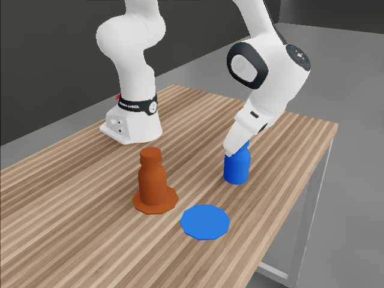
该图取自中止时刻；15 fps 原视频最后采样在 27.333 秒，因此精确碰撞帧单独展示。
模型第一步输出世界坐标 (0.35, 0, 0.40) m，距真实手腕约 5.08 米，超过每步 15 厘米限制，被执行器拒绝。
不给 state 和标定，却要求绝对世界坐标，模型缺少确定原点的位置依据。该集 4 次动作被拒绝后又遇到网络中断；不能据此断言纯视觉抓取不可行。
保留静态标定后的首步落在正确工作区，但位移 17.79 厘米，仍超过 15 厘米限制。
这条证据说明首步越界；缺少动态手腕位置可能影响步长估计，不能把这一条当作整组实验结论。
第 7 次指令先降至 Z=1.210 m，再降至 1.115 m，夹爪一直张开约 8 厘米。第二段执行 1.075 秒时，手掌与瓶体穿透 2.061 毫米，触发中止。
第一路点跟踪误差仅 0.074 毫米，未显示明显偏差；终止记录明确为接近碰撞。同一动作块内部没有再次看图修正。
FR3 固定镜头沿用旧 PsiBot 的观察中心，相对当前瓶子区域在 X、Y 方向偏了约 32、38 厘米。初态投影检查中，旧头部视角两瓶质心已在画面上边界之外；旧第三视角的蓝瓶质心距右边仅约 38 像素。腕部相机还会随手腕转动，所以不适合作为默认观看镜头。
新固定镜头对准实际操作区。镜头构图有问题已得到验证，但它对抓取失败的具体影响仍需相同条件复验；换展示镜头不改变原来的失败成绩。
下面两条都有完整终态和实际采集计时。严格 RGB 的绝对世界坐标动作未能执行；两瓶任务完成过第一瓶，但接近第二瓶时安全中止，整链未成功。
| 条件 / 结果 | 实际采集 / 仿真 | 模型返回 / 实际执行 | 逐条费用 / 数据 |
|---|---|---|---|
| 严格 RGB · 单瓶放置seed 9401 · xhigh · 0/1 整集成功；含 1 次服务中断失败记录保留 4个绝对WORLD动作被拒绝，随后TLS错误终止；0次物理动作执行 结果 · 同步核验 | 308.2 秒墙钟22:25:43—22:30:51 · UTC+8实测整集起止；策略段未单独记录实际记录跨度 1.100 仿真秒动作执行 0.000 仿真秒末端仿真时钟 1.100 秒 | 78.12 秒 / 返回返回事件间隔倒数 0.0128 Hz5 请求 / 4 返回 / 0 执行块累计推理等待 292.1 秒实际执行吞吐 0.0000 块 / 墙钟秒执行块含 0 个有运动路点；末块可能安全中止 | $0.45930输入 9,295 / 输出 7,327缓存命中 0 / 写入 0 · 未知 usage 1 次17 同步帧 / 相机 × 45 套模型决策观测 / 132 条控制状态成功轨迹摊销：无成功，未定义 |
| 完整输入 · 连续两瓶seed 9401 · xhigh · 0/1 整集成功；1/2 子任务曾完成失败记录保留 棕瓶曾独立完成，接近蓝瓶时手掌与瓶体穿透2.061mm触发安全中止，整链失败 结果 · 同步核验 | 517.1 秒墙钟22:53:56—23:02:33 · UTC+8含场景初始化；策略采集段 444.6 秒实际记录跨度 26.275 仿真秒动作执行 26.275 仿真秒末端仿真时钟 27.375 秒 | 58.53 秒 / 返回返回事件间隔倒数 0.0171 Hz7 请求 / 7 返回 / 7 执行块累计推理等待 367.8 秒实际执行吞吐 0.0135 块 / 墙钟秒执行块含 14 个有运动路点；末块可能安全中止 | $0.83042输入 31,567 / 输出 10,295缓存命中 0 / 写入 0 · 未知 usage 0 次394 同步帧 / 相机 × 47 套模型决策观测 / 3154 条控制状态成功轨迹摊销：无成功，未定义 |
严格 RGB 的 0/1 保留了含 TLS 错误的整次尝试，没有删除后重新编号，也不能据此断言纯视觉不能抓取。两瓶任务的“曾完成 1/2 子任务”不等于整链成功。两种不同任务不合并计算成功率；本表没有排除为无效的场景。费用只含已知用量，未知 usage 不算免费；$3 预留预算不是已发生费用。
模型返回间隔按首末可解析动作返回之间的真实时间计算。实际执行吞吐 = 有物理运动的动作块数 ÷ 整集墙钟秒数，最后被安全中止但已运动的块也计入；它不是模型返回频率，也不是底层 120 Hz。
E4 额外记录了每相机 15 fps 的仿真视频、帧时间戳和 120 Hz 实际关节状态/目标，并通过同步核验。模型仍只在请求边界看到当前四路 RGB（这里分别 5 套、7 套），不是持续读取全部视频帧。训练格式导出与训练数据验收尚未完成。
两瓶记录从仿真时钟 1.100 到 27.375 秒，实际跨度 26.275 秒；不能把末端时钟直接当作记录时长。每集墙钟含不同程度的场景准备，不能直接用它给两种任务做模型速度排名。
棕瓶先完成放置，随后接近蓝瓶时触发安全中止。录像是仿真时间，不包含约 368 秒推理等待。
下载 E4 逐条费用、时序口径与来源哈希 · 此处金额固定按 2026-09-10 标准 API 等值，不随 E3 自定义单价控件变化。
夹爪放置表现最好；灵巧手已能稳定抬起，但还没有足够可靠。
| 机器人 / 任务 | 档位 | 成功 | 平均推理等待 | 估算费用 / 集 | 统计说明 |
|---|---|---|---|---|---|
| FR3抓取并稳定保持 | medium | 12/20 60% | 16.9 秒 / 次 | $0.26API 标准价等值 | 含 2 集网络失败 |
| FR3放到圆垫并释放 | medium | 6/20 30% | 19.0 秒 / 次 | $0.25API 标准价等值 | 含 1 集网络失败 |
| FR3放到圆垫并释放 | xhigh | 9/10 90% | 40.5 秒 / 次 | $0.52API 标准价等值 | 无网络中断 |
| PsiBot抓取并稳定保持 | xhigh | 3/10 30% | 85.7 秒 / 次 | $1.23API 标准价等值 | 补跑后有效 N=10 |
费用按当前 API 标准价换算已知用量，非实际账单；每集均摊包含失败集。FR3 分母保留网络失败，PsiBot 分母为补跑后的有效集。
FR3 放置配对子集：medium 3/10 → xhigh 9/10。medium 中有 1 集网络中断；样本量较小，仍需复验。
FR3 的 50 集中，18 集触发接近碰撞中止。PsiBot 的 10 个有效集中，4 集未建立抓取或达标抬升。
E2 改用 E3 的保持门重评：FR3 medium 3/5 → 4/5、xhigh 3/5 → 5/5；PsiBot xhigh 0/5 → 1/5。原始评分保留。本轮 PsiBot 3/10 对同口径 1/5，尚不足以证明稳健提升；材质、措辞、语义和种子同时改变。
PsiBot 有效种子为 9201–9204、9211–9216；9205–9208 保留为基础设施无效场景（9208 零请求），9209/9210 未运行。成功种子：9212、9214、9215。
FR3 放置 · seed 9301 · xhigh · 第 1/6 次决策。这一轮只接近瓶子，还没有闭合夹爪；整条轨迹最终通过独立放置评估。
任务：拿起棕色试剂瓶，竖直放到绿色圆垫，松开夹爪并撤回。
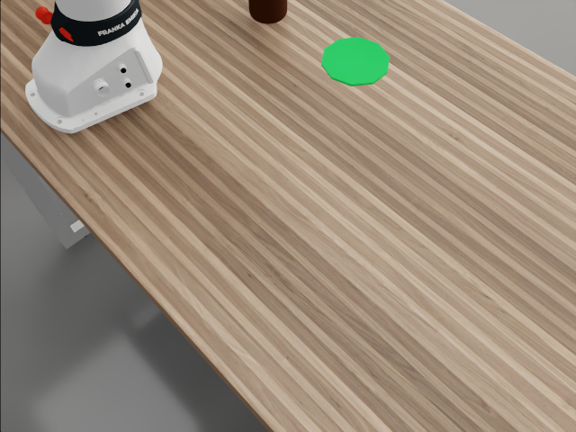
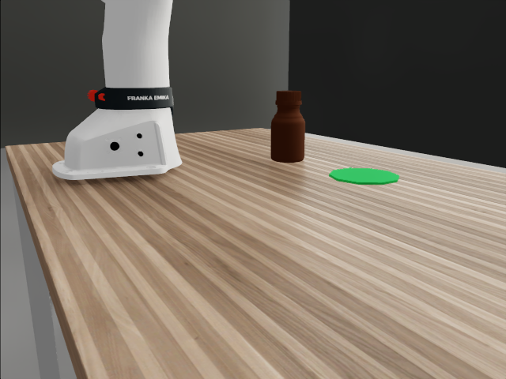
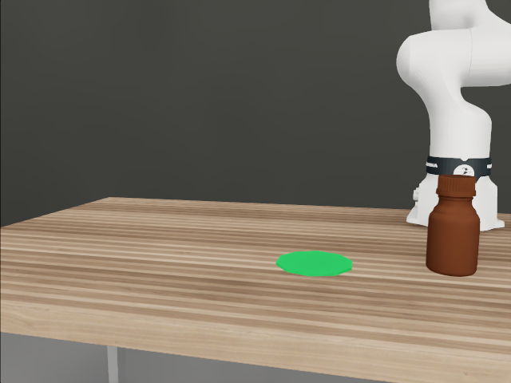
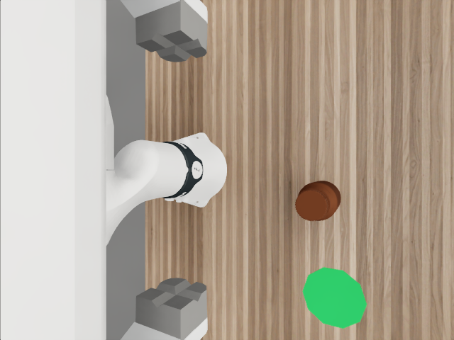
上面四张就是本轮发送的原始 RGB，点击可看原图。下面是同时发送的 state 的可读摘录；小数仅在说明中四舍五入，完整文件保持原值。
完整 state JSON · 实际提示词 · execute_motion 参数约束 · 来源哈希
{
"task_instruction": "Pick up the opaque brown reagent bottle and place it upright on the green target pad. Release it and withdraw the gripper.",
"sim_time_s": 0.0,
"robot": {
"wrist_link": "fr3_hand",
"position_world_m": [
-0.8428294062614441,
-4.799976348876953,
1.5399258136749268
],
"quaternion_world_wxyz": [
-2.6995159714715555e-05,
0.9999998807907104,
0.00021511940576601774,
-0.0004724037426058203
],
"robot_base_position_world_m": [
-1.149999976158142,
-4.800000190734863,
0.9499999284744263
],
"robot_base_quaternion_world_wxyz": [
1.0000001192092896,
4.6293330280278155e-11,
6.917044159671093e-10,
2.0330671868240557e-10
],
"arm_joint_names": [
"fr3_joint1",
"fr3_joint2",
"fr3_joint3",
"fr3_joint4",
"fr3_joint5",
"fr3_joint6",
"fr3_joint7"
],
"arm_joint_position_rad": [
9.013839189719874e-06,
-0.7843809127807617,
3.153979923808947e-05,
-2.356325149536133,
7.627878221683204e-05,
1.5709999799728394,
0.7850000262260437
],
"arm_joint_velocity_rad_s": [
-9.233636228600517e-05,
-0.00621294928714633,
-0.0003164757217746228,
0.0032783891074359417,
-0.0007632389897480607,
9.763489288161509e-07,
-5.276650938412786e-08
],
"arm_joint_limits_rad": [
[
-2.743699789047241,
2.743699789047241
],
[
-1.7836999893188477,
1.7836999893188477
],
[
-2.9006998538970947,
2.9006998538970947
],
[
-3.042099952697754,
-0.1517999917268753
],
[
-2.80649995803833,
2.80649995803833
],
[
0.544499933719635,
4.516899585723877
],
[
-3.015899658203125,
3.015899658203125
]
],
"finger_joint_names": [
"fr3_finger_joint1",
"fr3_finger_joint2"
],
"finger_joint_position_m": [
0.03999985381960869,
0.03999985009431839
],
"finger_joint_velocity_m_s": [
4.7223325054801535e-06,
4.722332960227504e-06
],
"finger_joint_limits_m": [
[
0.0,
0.03999999910593033
],
[
0.0,
0.03999999910593033
]
],
"gripper_width_m": 0.07999970018863678,
"gripper_width_limits_m": [
0.0,
0.07999999821186066
],
"finger_target_slew_limit_m_s": 0.20000000298023224
},
"cameras": {
"head_camera": {
"resolution_wh": [
640,
480
],
"K_pixels": [
[
615.8730332370546,
0.0,
320.0
],
[
0.0,
615.8730332370546,
240.0
],
[
0.0,
0.0,
1.0
]
],
"T_world_from_camera_opencv": [
[
0.7213350663963525,
-0.586172218540613,
0.3688873163964111,
-1.4349999427795406
],
[
-0.6925862559905207,
-0.6105038936263822,
0.3841995235291941,
-5.506000041961669
],
[
5.5900041968020567e-08,
-0.5326228741597592,
-0.8463526888489187,
1.6080000400543215
],
[
0.0,
0.0,
0.0,
1.0
]
],
"frame": "OpenCV X right Y down Z forward",
"distortion": [
0,
0,
0,
0,
0
]
},
"chest_camera": {
"resolution_wh": [
640,
480
],
"K_pixels": [
[
555.5555650987377,
0.0,
320.0
],
[
0.0,
555.5555650987376,
240.0
],
[
0.0,
0.0,
1.0
]
],
"T_world_from_camera_opencv": [
[
0.8572844513585541,
-0.12945078850143538,
0.49830298294834563,
-1.3880000114440911
],
[
-0.5148430532296834,
-0.2155533416699338,
0.8297429646800643,
-5.592999935150146
],
[
-7.892741106986313e-09,
-0.9678735714189544,
-0.2514373674470812,
1.1100000143051145
],
[
0.0,
0.0,
0.0,
1.0
]
],
"frame": "OpenCV X right Y down Z forward",
"distortion": [
0,
0,
0,
0,
0
]
},
"third_camera": {
"resolution_wh": [
640,
480
],
"K_pixels": [
[
555.5555650987377,
0.0,
320.0
],
[
0.0,
555.5555650987376,
240.0
],
[
0.0,
0.0,
1.0
]
],
"T_world_from_camera_opencv": [
[
-0.23548381347898384,
0.14275643364672772,
-0.9613365561767964,
-0.17535567283630377
],
[
0.9718782709729618,
0.03458950741293963,
-0.23292958675860947,
-4.988999843597411
],
[
-3.9160258153703966e-08,
-0.9891532574022073,
-0.14688714501480674,
1.1519763469696045
],
[
0.0,
0.0,
0.0,
1.0
]
],
"frame": "OpenCV X right Y down Z forward",
"distortion": [
0,
0,
0,
0,
0
]
},
"wrist_camera": {
"resolution_wh": [
640,
480
],
"K_pixels": [
[
366.4996579879497,
0.0,
320.0
],
[
0.0,
366.4996579879497,
240.0
],
[
0.0,
0.0,
1.0
]
],
"T_world_from_camera_opencv": [
[
0.8853926554640533,
0.0004302132413553617,
-0.46484369476941334,
-0.7878625048627332
],
[
0.0004060992163283025,
-0.9999999059898085,
-0.0001519993455417199,
-4.799950801795144
],
[
-0.46484371646149963,
-5.419355598302984e-05,
-0.8853927469373801,
1.5048738632094498
],
[
0.0,
0.0,
0.0,
1.0000000000000002
]
],
"frame": "OpenCV X right Y down Z forward",
"distortion": [
0,
0,
0,
0,
0
]
}
},
"last_execution_feedback": null,
"memory_from_previous_decision": "",
"requests_remaining_including_this": 10
}等待 43.83 秒后，模型返回一条 execute_motion 调用，里面有两个末端目标：
两个目标均保持四元数 (0, 1, 0, 0)、夹爪总开口约 8 厘米。本轮没有闭合；task_done=false，执行后继续拍图决策。以上是命令目标，实际是否跟到位由执行反馈记录。
输出是“手腕去这里＋夹爪开这么宽”，不是七轴关节角度。底层逆运动学控制器把它换成机械臂关节目标。模型文字中猜测瓶子在 (−0.86, −4.86) 附近，那是模型自己的估计，不是输入的物体真值。
下载完整输出 · 包含模型自写观察与记忆，不等于已验证的空间计算过程。
{
"visual_observation": "The brown bottle is upright beside the robot base, with the green pad to its side. The open gripper is high above the table. Camera views suggest the bottle is near world (-0.86, -4.86).",
"memory_for_next_observation": "Approaching bottle from above, maintaining downward-facing open gripper. Estimated table z=0.94, bottle top≈1.07, bottle center xy≈(-0.86,-4.86); green pad xy≈(-0.84,-5.055). Next inspect alignment, descend to a body grasp around wrist z=1.10, close, lift, transfer, lower, release and withdraw. All translations bounded to 0.15 m.",
"task_done": false,
"actions": [
{
"duration_s": 2,
"position_world_m": [
-0.86,
-4.86,
1.407
],
"quaternion_world_wxyz": [
0,
1,
0,
0
],
"gripper_width_m": 0.07999999821186066
},
{
"duration_s": 2,
"position_world_m": [
-0.86,
-4.86,
1.26
],
"quaternion_world_wxyz": [
0,
1,
0,
0
],
"gripper_width_m": 0.07999999821186066
}
]
}本次请求：输入 4,041 token，输出 1,173 token（含推理），缓存 0；标准 API 等值 $0.09906 / 次。这不是整条成功轨迹的成本，整条费用见下面逐条记录。
看这条轨迹的完整执行视频 →当前验证的是：RGB + 相机标定 + 机器人状态 → 末端位姿与手部指令 → 通用控制器执行。纯 RGB 和长程任务尚未测试。
每轮读取四路当前图像，以及机器人自身状态。物体和目标的位置需要从图像判断；相机标定与末端位姿为世界坐标动作提供参照。
没有输入物体真值位姿、抓取点或参考轨迹。独立评估器读取真值判分；模型自报完成不等于成功。
这些自身状态来自仿真，未引入真实传感器噪声。固定说明还包含手部语义和抓取提示，因此不属于完全没有机器人先验的探索。
选择接近位置、手腕朝向、收拢手指的目标，以及抬起、搬运、松开与撤离。FR3 两指目标各为总开口的一半；PsiBot 六维手指目标直接来自模型，没有调用预设“抓瓶子”手势。
从仿真器读取实时雅可比矩阵，以阻尼最小二乘逆运动学计算机械臂关节修正，并执行插值、限速和关节限位。机器人运动学由底层承担，不要求 Astra 自己计算七轴逆解。
底层没有代替模型选择抓取点或规划绕障路径。动作越界会拒绝，几何违规可能终止；接触与摩擦决定能否真正抓住。输出中的位置估计不能证明模型内部使用了精确三维重建或力闭合计算。
E3 成功率不能回答这个问题。E4 严格 RGB 首集已记录，但三条件尚未配齐；查看首集结果。下面是本轮实际输入对照。
| 实验条件 | 模型保留的信息 | 要验证什么 |
|---|---|---|
| full 完整输入 | 四路 RGB、完整标定、机器人关节/末端/手部状态 | 相同 seed 下的完整信息基线。 |
| 去掉机器人实时状态 | 四路 RGB、固定相机 K/T、腕相机 K、固定机器人说明 | 移除机器人实时 state 与腕相机动态 T；能否靠视觉判断自身位置与手部状态？ |
| 严格 RGB 条件 | RGB、任务、固定动作接口说明；记忆与动作历史策略预先固定 | 无实时状态和标定，能否建立足够的空间对应关系？ |
删除 robot 字段还不够：腕相机动态外参和执行误差反馈也可能透露状态。严格 RGB 条件须清理这些通道，并约定记忆/历史的信息范围。
底层逆运动学仍需关节反馈。应分别说明模型和控制器的信息条件。
当前要求输出世界坐标。改成手腕相对位移是另一项接口实验，不能混作单纯移除 state 的对比。
E3 抓取—搬运—放置—撤手是多阶段短任务，每集请求上限主要为 8–10 次。FR3 放置 xhigh 的 9/10、PsiBot 抓取的 3/10，仅支持当前条件下的短任务表现。
完整输入的两瓶首集已结束：第一瓶曾独立完成，接近第二瓶触发安全中止，整链失败。其余两瓶和三瓶任务与消融交替排队，中途不重置场景；看逐条记录和视频。仅一次失败不能判定长程能力上限。
实时性另行验证：FR3 放置 xhigh 平均等待 40.5 秒/次，PsiBot 85.7 秒/次，期间物理暂停。当前没有证明持续变化环境中的实时长程操作能力。
默认展示第三视角，展开可看头部、胸部和腕部相机。视频是仿真时间，不包含模型推理等待。
6 次决策 · 抬升 105.7 mm，释放后距目标 4.9 mm
7 次决策 · 抬升 74.7 mm，倾斜 10.8°
6 次决策 · 抬升 81.4 mm 并稳定保持
2 次决策 · 接近时触发穿透硬中止
8 次决策 · 瓶体倾倒至约 90°
这里“一条”是一整次 episode 尝试，不是一张图。成功尝试可称成功轨迹；尚未完成训练格式导出和数据验收，不能直接称为可训练样本。
把该条所有请求的已知 token 费用相加。成功、失败都逐条列出，未知 usage 不计成免费。
同批所有尝试的已知费用 ÷ 独立评估成功数。包括失败代价，区别于成功那一条自己的花费。
PsiBot 的全程摊销包含 4 个基础设施无效场景的花费，但它们不混入 10 集有效实验的成功率分母。已知费用均为 Standard API 等值；不含机器、电力、人力或未知用量。
| 轨迹 / 结果 | 采集 / 仿真时间 | 模型输出 / 等待 | Token / API 等值 |
|---|
下载全部 64 条记录与时间口径 JSON · 金额跟随下方单价设置；默认沿用 2026-09-10 核验的 API 标准价。
输入条件与任务长度分开验证。两个实验任务代码与数据独立，GPU 1 上串行交替，避免资源争用。先做消融首个 seed 的三条件试采，再释放 GPU 给长程首集；不必等整批消融完成。
真实四路 RGB、state、动作已展示；保留 E3 64 个场景。E4 首批两条已结束尝试新增完整采集墙钟、输出与执行频率、同步数据和逐条费用。
三组均四路 RGB，seed 9401–9405，xhigh，每集最多 10 请求。strict RGB 首集已结束，四个动作被拒绝后 TLS 失败；原始尝试保留。
09.10 23:04 no_state 首请求已发出，full 随后自动接续；其余 12 集已入队。no_state 保留三固定相机 K/T 与腕 K，删腕动态 T 和机器人实时 state；strict RGB 删全部 K/T 与 state。尚未完成三条件配对，不提前比较成功率。
上限 150 请求，已知 API 等值 $30 软停止；未知 usage 另列。
两瓶 seed 9401 已完成首次采集：整链失败，第一瓶曾独立完成。23:02 已释放 GPU，让 no_state/full 接续；其余两瓶及三瓶任务仍独立排队。
计划两瓶 3 seed × 20 请求、三瓶 3 seed × 30 请求，每集不重置。整链评估与子任务进度分开；上限 150 请求、已知等值 $30 软停止。
另设手腕相对动作接口，排查严格 RGB 在绝对 WORLD 坐标下缺少参照的问题。它改变了动作接口，单列实验，不混入 full/no_state/strict RGB 三组对照。
GPU 场景门与模型采集尚未启动；最多 10 请求、已知等值 $3 软停止。预算额度不等于花费。
状态为 2026-09-10 23:09 的已核快照，后续运行结果不提前填写。无 state 指模型不接收机器人实时状态；底层控制器仍使用反馈。各任务隔离数据与请求账本，在 GPU 1 上串行交替。
按 API Standard：输入 $10 / 百万、缓存输入 $1 / 百万、输出 $50 / 百万 token。来源：OpenAI 官方价格，核对于 2026-09-10。
| 条件 | 输入 token | 输出 token | 估算 USD | 估算 / 集 |
|---|---|---|---|---|
| FR3 · 抓取并稳定保持medium · 20 集 | 363,048含缓存 2,176 | 31,401 | $5.18 | $0.26 |
| FR3 · 放到圆垫并释放medium · 20 集 | 341,217含缓存 9,216 | 31,508 | $4.90 | $0.25 |
| FR3 · 放到圆垫并释放xhigh · 10 集 | 242,410含缓存 2,304 | 56,693 | $5.24 | $0.52 |
| PsiBot · 抓取并稳定保持xhigh · 10 集 | 430,077 | 159,170 | $12.26 | $1.23 |
| PsiBot · 基础设施无效场景xhigh · 4 场景 | 11,426 | 3,381 | $0.28 | — |
E3 全程包含 PsiBot 无效场景的 8 次请求。E3 缺失 usage 的 12 次请求没有按 0 计费，未纳入可计算金额；同样不包含工程代理、GPU、订阅或服务商附加费用。合计按未四舍五入的金额计算；实际扣款须以账单为准。
单位为美元 / 百万 token。更改后只更新本节估算；效果表保留官方标准价基线。
估算 = 普通输入 × 输入单价 + 缓存输入 × 缓存价 + 缓存写入 × 写入价 + 输出 × 输出单价，再除以 1,000,000。
从 E1—E3 的逐请求 provenance 读取用量，输入已包含图像，输出已包含推理 token，均不重复加价。E3 的 300 条已知用量记录与最终报告逐项一致；缓存写入为 0。单请求输入最多 5,993 token，未触发超过 272K 的长上下文价格。
这里估算的是按标准 API 单价执行同等用量的金额。实际服务档位、订阅或平台折扣未从账单核验；Batch / Flex、Fast 或其他计费方式不能直接套用本金额。
完整数字、判据、逐集记录和技术细节保留在这里。
root_com_pos_w / root_com_lin_vel_w），不是腕、指或瓶口点，也无漏 tick；PhysX 的位置与速度在求解阶段不同，文档明确报告速度不保证等于步间位移差分（PhysX 求解器说明）。典型例子 E2 FR3 9104-medium：末秒原生峰值 152.508 mm/s，1/30 s 质心差分峰值仅 0.106 mm/s，末秒净位移 0.011 mm——原生量在接触约束下会出现未被积分成位移的瞬时值，不能作为"是否稳定保持"的判据。未记录的内部冲量不能据此强行归因，两路报告都只写到这一层。| E2 路 × 档位 | E2 官方判分 | 按 E3 冻结判据重评 | 改变的集 |
|---|---|---|---|
| FR3 medium | 3/5 | 4/5 | 9104-medium 由速度门失败转为成功（原生 152.5 → 差分 0.106 mm/s）；9103-medium 仍是硬中止 |
| FR3 xhigh | 3/5 | 5/5 | 9102-xhigh（54.5 → 0.84 mm/s）、9105-xhigh（60.4 → 3.31 mm/s）转为成功 |
| PsiBot medium | 0/5 | 0/5 | 无变化（碰倒 / 硬中止与速度口径无关） |
| PsiBot xhigh | 0/5 | 1/5 | 9102-xhigh（原生 83.262 → 单 tick 差分 6.022 → 4 tick 差分 0.422 mm/s，倾斜 3.6°）转为成功；9101/9104 仍因倾斜 26.5°/16.7° 失败 |
astra_fr3_grasp_e3/VELOCITY_METRIC.md（逐集原生/单 tick/4 tick 对照表 + 数据路径）、astra_psibot_grasp_e3/VELOCITY_METRIC.md、两路 REPORT_SUMMARY.json 的 e2_reevaluation 字段。勘误：本页 2B.2 FR3 表此前把 9102-xhigh 与 9104-medium 的原生速度写反，已按 evaluation.json（9102-xhigh 54.5、9104-medium 152.5 mm/s）改正。| 项目 | E3-FR3 | E3-PsiBot |
|---|---|---|
| 相机 / 时钟 | 四路 640×480 RGB（含腕相机），K/T 取自 renderer 实际参数；Phase 1 自检 960 tick = 8.000000417 s、每路 121 帧；逐帧渲染/物理一致性核验 | |
| Phase 1 伺服 | 末端位置 0.09–0.10 mm、姿态 2.4–2.6e-4 rad | 四项位置误差 2.329 / 2.497 / 1.729 / 1.790 mm；5 个 mimic 最大残差 1.249e-5 rad |
| 接触监测 | 13 个机器人 link 对环境（抓取 3 个、放置 4 个过滤体，含圆垫），−2 mm 阈值；20 mm 探针首 tick −19.999910 mm、锁存 12 tick | 53 个机器人 link 对瓶体；同一探针 −19.999910 mm、12/12 锁存；续跑两次初态恢复 COM 差 0、朝向差 2.98e-8 rad |
| 不透明 | 原 brown_reagent_bottle_large 含 OmniGlass。按 owner 允许改为仅渲染层 overlay：哑光深棕、opacity=1、roughness=0.9，无活动 OmniGlass；物理与几何哈希前后一致（FR3 另核 484 个碰撞几何的物理材质属性逐项相同）。本轮"真正不透明"条件成立。 | |
| 放置目标（FR3） | FR3 场景原红叉可见但不跟随其刚体移动，不能当目标。改为半径 6 cm、厚 4 mm 的绿色哑光运动学圆垫，逐集随机目标；只排除圆垫–桌面安装接触，保留圆垫对瓶体/机器人的监测。目标坐标不输入模型，只能靠看。成功 = 瓶在圆垫上直立稳定（同一保持门）。 | |
| 公开状态 / 措辞（PsiBot） | — | 公开 6 维手命令的手型语义（拇指–食指指垫间隙全开/全合 76.7 / 0.08 mm，公开量级 77 / 0 mm）；任务措辞要求"拇指与四指对向夹持、保持直立"。手型语义与装置源码在首个请求前冻结（哈希核验）。 |
| 请求上限 | 抓取 ≤8 / 集；放置两档在首请求前统一冻结为 ≤10 / 集 | ≤8 / 集 |
| 任务 × 档位（seed） | 成功 | 曾抬升 ≥50 mm | 请求总数 | 均请求/集 | 平均单次延迟 | 已知 token | 失败阶段 |
|---|---|---|---|---|---|---|---|
| 抓取 · medium（9201–9220） | 12/20（60%） | 12/20 | 91 | 4.55 | 16.92 s | 394,449 | 接近碰撞硬中止 6（9204/9206/9211/9212/9215/9217，均在第 3 次请求）· TLS 中断 2（9219/9220） |
| 放置 · medium（9301–9320） | 6/20（30%） | 7/20 | 83 | 4.15 | 18.96 s | 372,725 | 接近碰撞硬中止 11 · 抓取未建立 2（9318 十次请求抬 5.0 mm 自报完成、9319 第 5 次硬中止）· 已抬起搬到目标上方后 TLS 中断 1（9310） |
| 放置 · xhigh（9301–9310） | 9/10（90%） | 9/10 | 57 | 5.70 | 40.45 s | 299,103 | 接近碰撞硬中止 1（9305） |
| seed | medium | xhigh |
|---|---|---|
| 9301 | 接近硬中止 / 2 / 0 | 成功 / 6 / 105.7 mm |
| 9302 | 成功 / 6 / 110.4 mm | 成功 / 6 / 100.1 mm |
| 9303 | 接近硬中止 / 2 / 0 | 成功 / 7 / 100.1 mm |
| 9304 | 成功 / 5 / 97.3 mm | 成功 / 6 / 100.3 mm |
| 9305 | 接近硬中止 / 2 / 0 | 接近硬中止 / 2 / 0 |
| 9306 | 成功 / 6 / 120.1 mm | 成功 / 6 / 97.6 mm |
| 9307 | 接近硬中止 / 2 / 0 | 成功 / 7 / 90.1 mm |
| 9308 | 接近硬中止 / 2 / 0 | 成功 / 6 / 105.1 mm |
| 9309 | 接近硬中止 / 3 / 0 | 成功 / 5 / 100.5 mm |
| 9310 | 已抬起 101.2 mm、搬到目标上方后 TLS 中断 / 6 | 成功 / 6 / 94.2 mm |
| seed | 请求 | 最大抬升 | 末窗最低抬升 | 末窗最大倾斜 | 末窗最大差分速度 | 结果 |
|---|---|---|---|---|---|---|
| 9201 | 8 | 62.6 mm | −38.7 mm | 90.1° | — | 抬起后掉落 / 保持高度失败 |
| 9202 | 8 | 6.5 mm | −38.6 mm | 99.3° | — | 抓取未建立，瓶被推倒 |
| 9203 | 8 | 39.1 mm | −1.2 mm | 3.1° | — | 抓取/恢复阶段几何硬中止 |
| 9204 | 6 | 43.2 mm | 41.8 mm | 12.1° | 0.1 mm/s | 稳定保持但抬升不足 50 mm（未放宽门槛） |
| 9211 | 8 | 6.4 mm | −38.6 mm | 90.1° | — | 抓取未建立，瓶被推倒 |
| 9212 | 7 | 74.7 mm | 71.3 mm | 10.8° | 0.149 mm/s | 成功 |
| 9213 | 8 | 6.8 mm | −38.8 mm | 90.1° | — | 抓取未建立，瓶被推倒 |
| 9214 | 6 | 65.3 mm | 58.5 mm | 4.9° | 1.292 mm/s | 成功 |
| 9215 | 6 | 61.1 mm | 60.5 mm | 5.2° | 0.102 mm/s | 成功 |
| 9216 | 8 | 6.4 mm | −38.7 mm | 90.1° | — | 抓取未建立，瓶被推倒 |
| PsiBot xhigh | 成功 | 曾抬升 ≥50 mm | 均请求/集 | 平均单次延迟 | 平均已知 token/集 | 失败阶段 |
|---|---|---|---|---|---|---|
| 有效 N=10（9201–9204、9211–9216） | 3/10 | 4/10 | 7.30 | 85.70 s | 58,925 | 抓取/抬升未建立 4（全部把瓶推倒至 ~90°）· 抬起后掉落 1 · 几何硬中止 1 · 稳定但高度不足 1 |
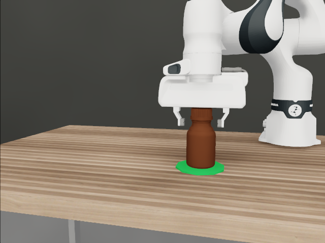
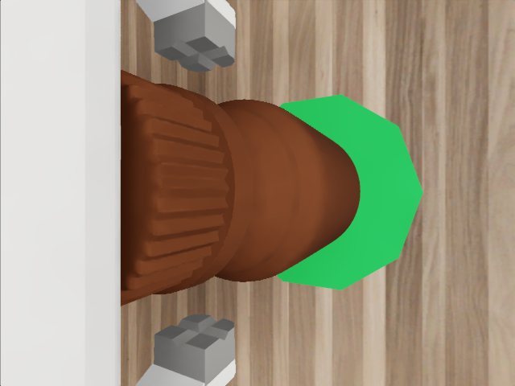
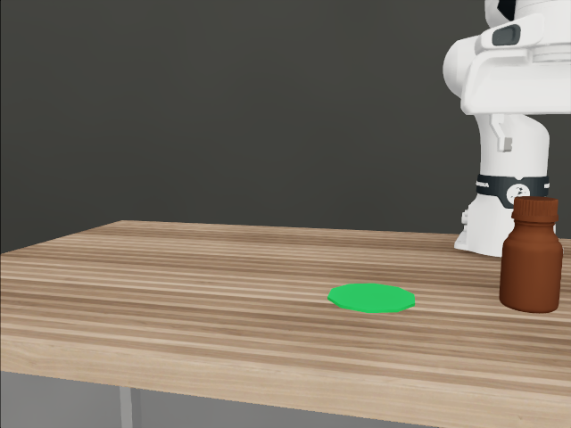
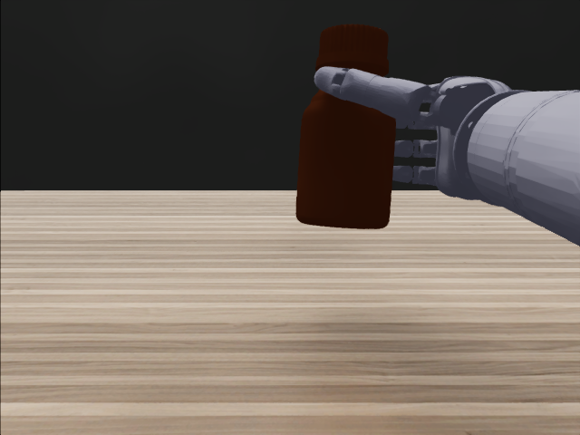
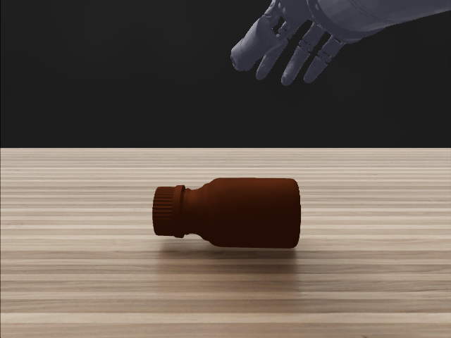
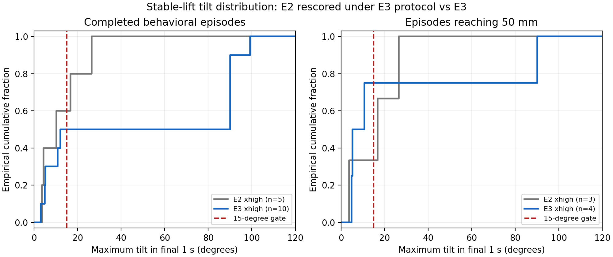
artifacts/analysis/tilt_comparison.png；红虚线 = 15° 门）：左图全部有效集——E3 曲线在 ~12° 处到 0.5 后平台到 90° 才再上升，即一半的集抬起且直、另一半推倒；右图仅"曾抬升 ≥50 mm"的集——E3 4 集中 3 集在 15° 门以内（E2 3 集中 1 集）。astra_fr3_grasp_e3/REPORT.md（70e018f，含 VELOCITY_METRIC.md、VERIFICATION.md、FINAL_MESSAGE.md；17 项测试、200 段视频、225 个唯一响应 ID 审计通过）、astra_psibot_grasp_e3/REPORT.md（015fb86，28 项测试、81 请求 / 56 视频审计通过、artifacts/analysis/tilt_comparison.png）；结构化 REPORT_SUMMARY.json 均含 by_task_effort / by_effort 与 e2_reevaluation。| 项目 | E1 | E2-FR3 | E2-PsiBot |
|---|---|---|---|
| 相机 | head / chest / third 固定三路 | 固定三路 + 腕相机（装在手部/腕 link，随伺服刚性运动核验；四路 K/T 重投影差 ≤1.6e-10 px）；初始位姿下腕相机看不到瓶子，如实记录 | |
| 末端接口 | PsiBot 腕位姿 + 11 手指关节目标 | 手部绝对位姿 + 夹爪开度（0–80 mm，对称驱动两指） | 腕位姿 + 正式数据集的 6 维手命令（6 驱动关节 + 5 mimic 从动跟随，耦合残差 1.25e-5 rad） |
| 物体 | 透明 100 ml 玻璃烧杯 | brown_reagent_bottle_large，3 cm 随机化。注意：该资产材质含 OmniGlass（深棕半透明玻璃），"严格不透明"条件并未满足，PsiBot 报告据此标注为条件性解读 | |
| 推理档位 | xhigh | seed 9101–9105 × {medium, xhigh} 配对，同 seed 同初始位姿（两路各自发现并修复重置微漂移 11–21 µm，最终 5 对初态位置/速度差为 0），按 seed 交替顺序；每集 ≤8 次请求 | |
| Phase 1 伺服 | 2.3 mm / 0.0058 rad | 0.090 mm / 0.00024 rad；+5 cm 转腕 0.100 mm / 0.00026 rad；两指闭合 26 mm / 张开 20 mm | 2.329 mm / 0.005793 rad；+5 cm 转腕 2.497 mm / 0.007769 rad；6/6 驱动 + 5/5 从动关节运动 |
| 接触监测 | 53 体 × Bottle/base | 13 link 对瓶体/地面/桌面；20 mm 探针 −19.99991 mm 首 tick 锁存 | 53 link 对瓶体；20 mm 探针 −19.99991 mm，12/12 tick 锁存 |
| seed | medium | xhigh |
|---|---|---|
| 9101 | 成功 / 7 / 107.6 mm | 成功 / 6 / 80.6 mm |
| 9102 | 成功 / 6 / 80.1 mm | 保持速度门失败（原生 54.5 mm/s；E3 口径重评 0.84 mm/s → 成功）/ 5 / 85.4 mm |
| 9103 | 空抓后下压，手掌–瓶体 −2.32 mm 硬中止 / 6 / 3.1 mm | 成功 / 6 / 75.4 mm |
| 9104 | 保持速度门失败（原生 152.5 mm/s；E3 口径重评 0.106 mm/s → 成功）/ 6 / 81.5 mm | 成功 / 6 / 80.1 mm |
| 9105 | 成功 / 5 / 80.5 mm | 保持速度门失败（原生 60.4 mm/s；E3 口径重评 3.31 mm/s → 成功）/ 5 / 75.5 mm |
| FR3 档位 | 严格成功 | 抬升 ≥50 mm | 平均决策/集 | 平均单次延迟 | 平均 token/请求 | 平均 token/集 | 失败阶段 |
|---|---|---|---|---|---|---|---|
| medium | 3/5 | 4/5 | 6.0 | 15.0 s | 4,484 | 26,905 | 保持稳定 1 · 抓取构型几何中止 1 |
| xhigh | 3/5 | 5/5 | 5.6 | 41.9 s | 5,242 | 29,356 | 保持稳定 2 |
| seed | medium | xhigh |
|---|---|---|
| 9101 | 侧倒，自报完成 / 8 / 5.3 mm | 抬起但倾斜 26.5°、原生速度 56.9 mm/s / 8 / 89.7 mm |
| 9102 | 侧倒，自报完成 / 8 / 6.4 mm | 抬起、倾斜 3.6°，但原生速度 83.3 mm/s（位置差分仅 6.0 mm/s，见 2B.4）/ 8 / 78.7 mm |
| 9103 | 侧倒，自报完成（含 1 次 4.8e-8 rad 浮点边界拒绝）/ 8 / 6.4 mm | 几何硬中止 / 4 / 1.9 mm |
| 9104 | 几何硬中止 / 2 / 3.3 mm | 抬起，倾斜 16.7° > 15° / 8 / 76.4 mm |
| 9105 | 几何硬中止 / 5 / 6.6 mm | 几何硬中止 / 8 / 0.7 mm |
| PsiBot 档位 | 严格成功 | 抬升 ≥50 mm | 平均决策/集 | 平均单次延迟 | 平均 token/请求 | 平均 token/集 | 失败阶段 |
|---|---|---|---|---|---|---|---|
| medium | 0/5 | 0/5 | 6.2 | 17.5 s | 5,110 | 31,682 | 抓取未建立/侧倒 3 · 接近/抓取几何中止 2 |
| xhigh | 0/5 | 3/5 | 7.2 | 82.7 s | 6,930 | 49,896 | 抬升后保持门未过 3 · 接近/抓取几何中止 2 |
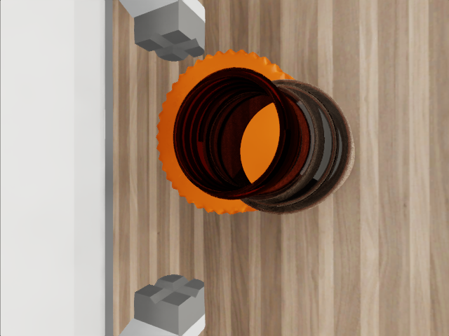
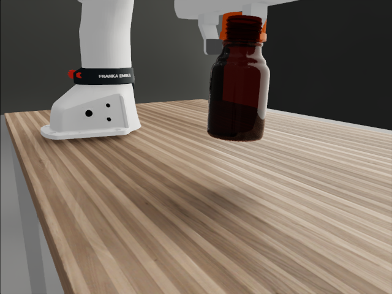
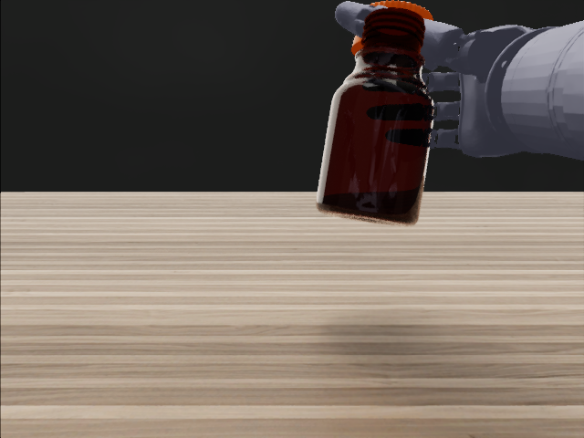
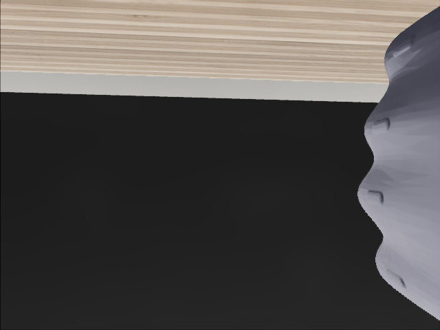
astra_fr3_grasp_e2/REPORT.md（含 RESULT_ANALYSIS.md）、astra_psibot_grasp_e2/REPORT.md；结构化 REPORT_SUMMARY.json 均含 by_effort。get_contact_data 监测 53 个传感刚体 × 56 个碰撞过滤路径，分离距离 <−2 mm 锁存硬中止（受控 20 mm 重叠探针首 tick 报 −19.99991 mm）。| 门 | 指标 | 结果 |
|---|---|---|
| Phase 0 相机 | 初始烧杯在 3/3 视角可见且未被机器人遮挡；PNG / 关节名 / 状态 / 限位 / 腕位姿 / K/T 全部保存 | 通过 |
| Phase 1 右腕 +1 cm | 位置误差 2.329 mm · 朝向误差 0.005793 rad（门限 4 mm / 0.035 rad） | 通过 |
| Phase 1 再 +5 cm 并绕世界 Z 转 0.1 rad | 位置误差 2.497 mm · 朝向误差 0.007769 rad | 通过 |
| Phase 1 手指合拢 / 张开探针 | 11/11 关节移动，最大 0.9523 / 0.7686 rad；腕位姿保持 | 通过 |
| 时钟 / 渲染一致性 | 960 个物理 tick = 8.000000417 s；3 路视频各 121 帧 15 fps，逐帧核对 53 个 link + 杯体的渲染/物理位姿 | 通过 |
| seed | 决策数 | 停止原因 | 成功 | 最大质心抬升 | 末态倾斜 | 推理总等待 | token（输入 + 输出） |
|---|---|---|---|---|---|---|---|
| 8110 | 6 | 模型置 task_done，独立判分未过（杯体侧倒） | 否 | 5.4 mm | 88.8° | 904 s | 23,846 + 22,565 = 46,411 |
| 8111 | 5 | 手掌基座与杯体穿透 2.34 mm，硬中止 | 否 | 0.0 mm | 5.0° | 579 s | 19,895 + 14,550 = 34,445 |
| 8112 | 6 | 末次请求分块传输中断（基础设施，非模型） | 否 · 通信影响 | 3.1 mm | 22.8° | 760 s | 19,862 + 16,304 = 36,166（另 1 次未知） |
| 8113 | 6 | 杯体侧倒后恢复失败，置 task_done 判分未过 | 否 | 11.4 mm | 88.8° | 1,383 s | 23,658 + 32,093 = 55,751 |
| 8114 | 3 | 3.5 h 全局截止，只用了 3/6 次 | 未达标 · 时间截断 | 0.0 mm | 0.5° | 343 s | 11,781 + 8,521 = 20,302 |
| seed | 主要阶段 | 依据 |
|---|---|---|
| 8110 | 接近 / 腕姿调整与抓取建立失败 | 杯体识别与位置描述与图像一致；多轮请求花在推断"手指相对腕部坐标轴"上。第 3 请求因 3.05 rad 比浮点上限高 4.77e-8 rad 被整块拒绝（接口边界，非危险动作）。第 5/6 请求位置跟踪误差 51 / 108 mm；末态杯体倾斜 88.8°（侧倒），最大只升 5.44 mm。 |
| 8111 | 接近 / 抓取构型：掌部撞杯体 | 第 5 请求第二段执行到 1.12 / 2 s 时 hand2_link_base 与 Bottle/base 分离距离 −2.34 mm，立即硬中止；杯体尚未抬起。 |
| 8112 | 接近 / 腕姿跟踪不足 + 通信中断 | 第 4 请求目标执行位置误差 122 / 43 mm、姿态误差 0.583 / 0.228 rad；第 6 请求 81 s 后 ChunkedEncodingError，无最终函数参数。 |
| 8113 | 抓取未建立，杯体侧倒后恢复失败 | 首请求把 hand2_joint_link_1_3 目标写成 1.56 rad（上限 0.04），整块拒绝；随后杯体侧倒，模型识别侧倒并调整，但位置误差 29.7 mm / 朝向 0.292 rad；最大抬升 11.4 mm；最长单请求 440 s。 |
| 8114 | 接近阶段被全局时间截断 | 仅 3/6 请求，手臂仍在接近，最后一段位置误差 19.6 mm。 |
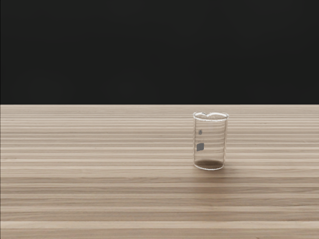
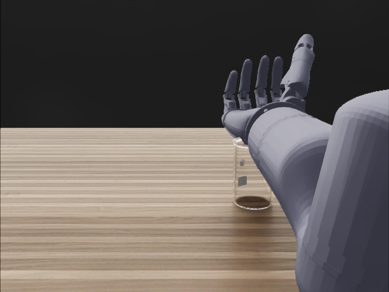
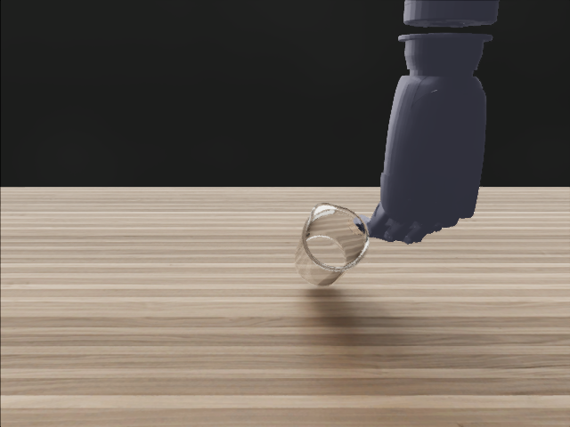
task_done=true，描述却写"稳定直立抓取与抬升尚未确认"。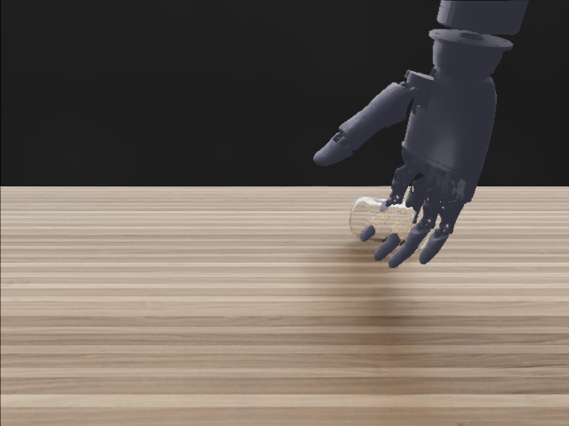
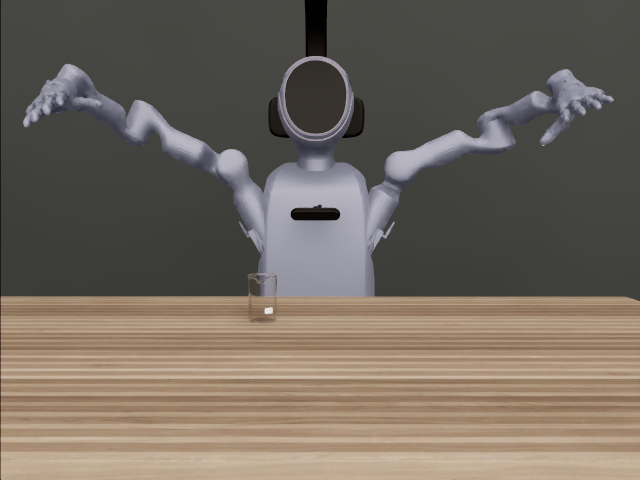
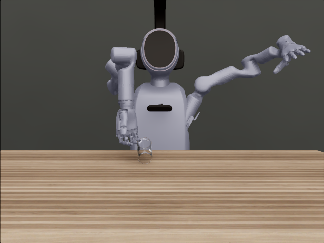
| # | 缺陷 | 若未发现的后果 | 判定依据 | 修复 | 封存样本（请求 / token） |
|---|---|---|---|---|---|
| 1 | 带渲染的 step() 推进多个物理子步：标称 4 s 动作实跑 7.5 仿真秒 | 动作时长与轨迹记录全部失真 | SDK 物理时钟与命令时长比对 | 每次 step(render=False) 只进一个 1/120 s 物理步，渲染独立 | seed 8101：2 / 12,824 |
| 2 | 场景关闭了 Fabric 变换输出，渲染 RGB 是过期 USD 位姿（烧杯悬空、机器人与关节状态不一致） | 喂给模型的图像是假的 | 渲染位姿 vs 物理位姿逐 link 比对（最大偏差 0.81 m / 2.93 rad） | 开启 Fabric 变换输出；用 Fabric hierarchy 读渲染位姿；每帧一致性检查 | seed 8102：4 / 24,495 |
| 3 | 原生接触回调返回 0 事件（手把杯子碰倒都不报） | 穿透硬中止形同虚设 | 受控 20 mm 重叠探针：回调 0，GPU 接触张量 −19.99991 mm | 改用 GPU get_contact_data，53 体 × 56 路径覆盖核验 | seed 8103：6 / 38,661（+1 次未知） |
| 4 | 传给模型的 chest / third 焦距 316.14 / 421.53 px，渲染器实际 555.56 px | 模型空间估计偏差数厘米，失败无法归因 | 公开 K/T 与渲染投影矩阵对同一点重投影比对 | K/T 直接从渲染器 CameraParams 导出，重投影差 <1e-6 px | seed 8104、8105：14 / 97,243 |
| 项目 | 数值 | 说明 |
|---|---|---|
| 策略请求 | 52 / 60 | 含全部前置无效尝试、拒绝、取消、传输错误；不含工程代理自身会话用量 |
| 已知 token | 196,301 输入 + 169,997 输出 = 366,298 | 另 2 次请求无 usage，精确总量不可确定，不按 0 计 |
| 有效批次 | 26 次请求 · 193,075 token | 5 集，平均 38,615 token/集，5.2 次决策/集 |
| 单次推理等待 | 均值 152.68 s · 最长 439.99 s | 客户端端到端；推理期间仿真暂停 |
| 墙钟 | 3.713 h（04:37:32 → 08:20:19） | 含环境适配、前置失败、正式请求、执行、核验与报告；最后一次请求 08:05:30 早于 08:07:32 截止 |
| GPU | 1 张 RTX 5090（共享） | 启动前按最大空闲选卡且 ≥10,752 MiB，nice 10；未杀任何非本任务进程 |
hand: open | close_fraction，等价于原文的夹爪），只保留 waypoint 决策；这不是抓取点先验，只是把末端自由度降到与原文同级。同时修数值边界误拒（3.05 vs 3.0499999523 rad）与腕姿可达性 / 2 s 执行时长验收。| 任务 | 最新有效尝试 | 停止原因 | 主要物体结果 | 判定 |
|---|---|---|---|---|
| rod_pick（双臂各取一根杆） | robocurve_v05 | 几何安全中止 | rod_l / rod_r 抬升 0，目标位置误差 0.16 m（未移动） | 未完成 |
| rack_colift（双手共抬试管架） | robocurve_v05 | 决策预算耗尽（12 次） | 架子抬升 6.4 cm，但目标位置误差 5.7 cm（判据 ≤3 cm）；末态直立 | 几何未达标 |
| beaker_relay（烧杯交接） | robocurve_v07 | 决策预算耗尽 | 烧杯抬升 0.4 cm | 未完成 |
PROTOCOL.md 中单列，不计模型失败。与 E1 的共同现象：接近阶段跟踪可用，需要精细对向接触的阶段（抓、共抬对齐、交接）不成立。| 项 | 规格 | 说明 |
|---|---|---|
| 图像输入 | head / chest / third（固定）+ wrist（腕 link）；640×480 RGB，detail=high，每张 ≈361 token | E1 无腕相机。K、T_world_from_camera（OpenCV）随状态给出，逐轮与 renderer 核验 |
| 状态输入 | 手部 link 世界位姿；7 臂关节 q / q̇ / 限位；FR3：夹爪开度 0–80 mm；PsiBot：6 驱动关节 + mimic 耦合 + 手型语义（伸展轴、掌心法向、拇指对掌方向、开合间隙）；上轮执行反馈（位姿误差、限速/限位触发、拒绝原因）；自写 memory（≤1600 字符）；剩余请求数 | 文本部分 ≈2.5k token（FR3）/ 4.1k（PsiBot E3）。不给：物体位姿、抓取点、目标坐标、深度、接触力 |
| 语言输入 | 一句任务 + 固定合同（单位、约束、评估口径、"自报完成不算成功"） | E3 PsiBot 措辞要求拇指对四指夹持瓶身并保持直立 |
| 输出 | 唯一工具 execute_motion，strict schema，每轮恰一次：actions[1–2]，每项 position_world_m[3] + quaternion_world_wxyz[4] + gripper_width_m（或 hand_joint_position_rad[6]，E1 为 [11]）+ duration_s 0.25–2.0；另 task_done、visual_observation、memory_for_next_observation | 实测 1.7–1.9 waypoint/次，时长几乎用满 2 s；输出 token medium ≈0.35k、xhigh 1–2.2k（推理 token 占 74–90%） |
| 校验 | 相邻 waypoint 位移 ≤0.15 m、最短旋转 ≤0.6 rad、手指在限位内；违反则整块拒绝、扣预算、物理不推进 | 拒绝罕见（E2 1 次、E3 FR3 2 次、E3 PsiBot 3 次），均未推进物理 |
| 执行 | 实时 Jacobian DLS IK（增益 4），位置线性 + 四元数最短路径插值，后 30% 时长锁定终点；关节 slew ≤0.72 rad/s、手指原生限速；物理 dt 1/120 s，渲染 15 fps | Phase 1 跟踪误差 FR3 0.1 mm / 2.4e-4 rad，PsiBot 1.7–2.5 mm / 0.006 rad。无规划器、无避障 |
| 安全 | GPU 接触张量监测机器人 link 对非机器人物体穿透，−2 mm 硬中止；每轮 20 mm 探针验证 | 本线最主要失败来源 |
| 评估 | 独立评估器只读真值、不回流：抬升 ≥50 mm；末 1 s 质心差分速度（1/30 s 窗）≤50 mm/s；倾斜 ≤15°；无硬中止。放置另加：已释放、质心水平距目标中心 ≤4 cm | E1/E2 曾用 PhysX 原生速度，E3 定稿差分口径并重评 E2（原判分保留） |
| 条件 | waypoint / 决策 | waypoint 时长 | 每决策覆盖仿真时间 | waypoint 频率（仿真） | 决策频率（墙钟） | 推理占墙钟 | 仿真时长/集 |
|---|---|---|---|---|---|---|---|
| E1 · PsiBot · 抓取 · xhigh | 1.88 | 1.99 s | 3.7 s | 0.58 Hz | 每 155 s 一次（0.39/min） | 98% | 17.8 s |
| E2 · FR3 · 抓取 · medium | 1.80 | 1.91 s | 3.4 s | 0.54 Hz | 每 17 s 一次（3.57/min） | 82% | 21.0 s |
| E2 · FR3 · 抓取 · xhigh | 1.68 | 1.97 s | 3.3 s | 0.51 Hz | 每 44 s 一次（1.38/min） | 93% | 19.6 s |
| E2 · PsiBot · 抓取 · medium | 1.84 | 1.97 s | 3.6 s | 0.55 Hz | 每 19 s 一次（3.10/min） | 84% | 21.4 s |
| E2 · PsiBot · 抓取 · xhigh | 1.86 | 1.91 s | 3.6 s | 0.54 Hz | 每 85 s 一次（0.71/min） | 96% | 25.4 s |
| E3 · FR3 · 抓取 · medium | 1.73 | 1.92 s | 3.3 s | 0.53 Hz | 每 19 s 一次（3.22/min） | 84% | 15.6 s |
| E3 · FR3 · 放置 · medium | 1.88 | 1.68 s | 3.2 s | 0.65 Hz | 每 21 s 一次（2.88/min） | 87% | 12.4 s |
| E3 · FR3 · 放置 · xhigh | 1.91 | 1.92 s | 3.7 s | 0.53 Hz | 每 42 s 一次（1.42/min） | 92% | 21.7 s |
| E3 · PsiBot · 抓取 · xhigh | 1.89 | 1.96 s | 3.7 s | 0.54 Hz | 每 88 s 一次（0.69/min） | 96% | 26.8 s |
| 轮次 | 机器人 / 末端 | 任务 | 物体 | 相机 | 档位 | N | 严格成功 | 曾抬 ≥50 mm | 决策/集 | 推理/次 | 推理/集 | 仿真执行/集 | 墙钟/集 | 备注 |
|---|---|---|---|---|---|---|---|---|---|---|---|---|---|---|
| E1 | PsiBot 7 轴 + 11 关节灵巧手 | 抓起并稳定保持 | 透明 100 ml 烧杯 | 3 固定 | xhigh | 5 | 0/5（0%） | 0/5 | 5.20 | 152.7 s | 794 s | 16.9 s | 804 s | |
| E2 | FR3 7 轴 + 平行夹爪 | 抓起并稳定保持 | 棕色试剂瓶（含 OmniGlass） | 3 固定 + 腕 | medium | 5 | 3/5（60%） | 4/5 | 6 | 15.0 s | 90 s | 20.2 s | 101 s | E3 口径重评 4/5 |
| E2 | FR3 + 平行夹爪 | 抓起并稳定保持 | 同上 | 3 固定 + 腕 | xhigh | 5 | 3/5（60%） | 5/5 | 5.60 | 41.9 s | 234 s | 18.6 s | 244 s | E3 口径重评 5/5 |
| E2 | PsiBot + 6 维灵巧手 | 抓起并稳定保持 | 同上 | 3 固定 + 腕 | medium | 5 | 0/5（0%） | 0/5 | 6.20 | 17.5 s | 108 s | 20.7 s | 120 s | |
| E2 | PsiBot + 6 维灵巧手 | 抓起并稳定保持 | 同上 | 3 固定 + 腕 | xhigh | 5 | 0/5（0%） | 3/5 | 7.20 | 82.7 s | 595 s | 24.8 s | 609 s | E3 口径重评 1/5 |
| E3 | FR3 + 平行夹爪 | 抓起并稳定保持 | 棕色试剂瓶，渲染层不透明 | 3 固定 + 腕 | medium | 20 | 12/20（60%） | 12/20 | 4.55 | 16.9 s | 77 s | 14.9 s | 85 s | 含 2 集 TLS 中断计失败 |
| E3 | FR3 + 平行夹爪 | 抓起 → 放到可见圆垫上 → 释放 | 同上 | 3 固定 + 腕 | medium | 20 | 6/20（30%） | 7/20 | 4.15 | 19.0 s | 79 s | 11.9 s | 86 s | 含 1 集 TLS 中断计失败 |
| E3 | FR3 + 平行夹爪 | 同上（与 medium 同 seed） | 同上 | 3 固定 + 腕 | xhigh | 10 | 9/10（90%） | 9/10 | 5.70 | 40.5 s | 231 s | 20.7 s | 242 s | |
| E3 | PsiBot + 6 维灵巧手 + 手型语义 | 对向抓握、保持直立、抬起 | 同上 | 3 固定 + 腕 | xhigh | 10 | 3/10（30%） | 4/10 | 7.30 | 85.7 s | 626 s | 25.8 s | 639 s | 另 4 个基础设施无效场景单列（含 1 个零请求场景） |
provenance.json 的 API usage；TLS 失败的请求无 usage（FR3 6 次、PsiBot 6 次），"token / 集"只计已知 usage，因此含 TLS 失败的集偏低（E3 FR3 抓取一集为 0）。输入构成（FR3 E3 一次请求 4,299）：文本 2,485 + 4 图 1,445 + 工具 schema 301 + 指令 42。| 条件 | 有 usage 的请求 | 输入 token / 次 均值 · 中位 | 输出 token / 次 均值 · 中位 | 其中推理 token 均值 · 占输出 | 推理延迟 / 次 中位 [最小, 最大] | token / 集 均值 [最小, 最大] | token / 集 入 · 出 |
|---|---|---|---|---|---|---|---|
| E1 · PsiBot · 抓取 · xhigh | 25 | 3,962 · 4,025 | 3,761 · 2,810 | 3,374 · 90% | 112.3 s [77, 440] | 38,615 [20,302, 55,751] | 19,808 · 18,807 |
| E2 · FR3 · 抓取 · medium | 30 | 4,170 · 4,218 | 314 · 286 | 109 · 35% | 13.0 s [9, 30] | 26,905 [22,393, 31,273] | 25,020 · 1,885 |
| E2 · FR3 · 抓取 · xhigh | 28 | 4,182 · 4,230 | 1,060 · 1,000 | 813 · 77% | 40.7 s [15, 82] | 29,356 [26,309, 31,632] | 23,420 · 5,936 |
| E2 · PsiBot · 抓取 · medium | 31 | 4,711 · 4,765 | 399 · 374 | 139 · 35% | 15.7 s [11, 31] | 31,682 [10,382, 41,452] | 29,209 · 2,473 |
| E2 · PsiBot · 抓取 · xhigh | 36 | 4,765 · 4,802 | 2,165 · 1,956 | 1,855 · 86% | 74.8 s [48, 155] | 49,896 [27,965, 57,165] | 34,310 · 15,586 |
| E3 · FR3 · 抓取 · medium | 87 | 4,173 · 4,229 | 361 · 337 | 149 · 41% | 15.9 s [9, 36] | 19,722 [0, 35,211] | 18,152 · 1,570 |
| E3 · FR3 · 放置 · medium | 81 | 4,213 · 4,275 | 389 · 325 | 171 · 44% | 16.7 s [9, 44] | 18,636 [9,017, 46,598] | 17,061 · 1,575 |
| E3 · FR3 · 放置 · xhigh | 57 | 4,253 · 4,298 | 995 · 997 | 737 · 74% | 40.0 s [14, 95] | 29,910 [11,373, 37,076] | 24,241 · 5,669 |
| E3 · PsiBot · 抓取 · xhigh | 73 | 5,891 · 5,935 | 2,180 · 1,886 | 1,862 · 85% | 77.6 s [28, 228] | 58,925 [44,946, 70,363] | 43,008 · 15,917 |
| 条件 | N | 成功 | 接近碰撞硬中止 | 抓取未建立 / 推倒 | 抬起后掉落 | 抬起但保持门未过 | 抬起不足 50 mm | 网络 / 截止 |
|---|---|---|---|---|---|---|---|---|
| E1 PsiBot 11 维手 xhigh | 5 | 0 | 1 | 2 | 0 | 0 | 0 | 2 |
| E2 FR3 夹爪 medium + xhigh | 10 | 6 | 1 | 0 | 0 | 3（E3 口径均成功） | 0 | 0 |
| E2 PsiBot 6 维手 medium + xhigh | 10 | 0 | 4 | 3 | 0 | 3（1 集 E3 口径成功） | 0 | 0 |
| E3 FR3 抓取 medium | 20 | 12 | 6 | 0 | 0 | 0 | 0 | 2 |
| E3 FR3 放置 medium | 20 | 6 | 11 | 2 | 0 | 0 | 0 | 1 |
| E3 FR3 放置 xhigh | 10 | 9 | 1 | 0 | 0 | 0 | 0 | 0 |
| E3 PsiBot 6 维手 + 语义 xhigh | 10 | 3 | 1 | 4 | 1 | 0 | 1 | 0（另 4 集作废） |
| 经典 VLA（π0.5 / GR00T） | RoboCurve 路线（本页试验） | 我们的采集主线（cuRobo 脚本配方） | |
|---|---|---|---|
| 输入 | 图像 + 语言 + robot state | 图像 + 语言 + robot state | 物体真值位姿 + 任务配方参数 |
| 高层理解 | VLA 内部 | GPT-6 Astra | 人写的阶段脚本（接近/预抓/闭合/抬起） |
| 动作输出 | 学习出的 action chunk | EEF waypoint 工具调用 | cuRobo 规划到抓取位姿 |
| 轨迹细节 / 高频控制 | learned action head | IK + 底层控制器 | cuRobo 轨迹 + 底层控制器 |
| 需要机器人数据训练 | 需要 | 不需要 | 不需要 |
| 在我们任务上的现状 | DP / ACT 在正式数据集上训练评测（见 PsiBot 面板） | E1 0/5（抓取构型不成立） | grasp/glass_beaker_100ml 100/100 通过全部数据门 |
90682bc1…b675e32，含正文、示意图、海报与 14 s demo 视频，已完整核对）。文中 block→bowl 19/20、精插 10%；本页试验是流程适配，不是原 benchmark 复现，不与其数字直接比较。原文图片版权归作者，本页只转述不转载。| 维度 | RoboCurve demo（原文） | E1（本页） | 影响 |
|---|---|---|---|
| 机器人 / 末端 | YAM 机械臂 + 平行夹爪（1 自由度开合） | PsiBot 7 轴臂 + 11 关节灵巧手，模型每步要给 11 个手指目标 | E1 多轮请求消耗在推断"手指沿腕局部哪个轴伸展"和手型上；原文模型只需决定夹爪开/合 |
| 物体 → 目标 | 高对比度粉色字母积木 → 大口碗（容错大） | 透明 100 ml 玻璃烧杯（薄壁、细高、易倒）→ 抬起并稳定保持 | E1 两集在接近时把杯子碰倒；模型对杯心位置估计偏差约 2.5 cm，对积木进碗足够、对薄壁杯抓合不够 |
| 相机 | 顶视相机 + 左右腕相机（腕相机直接给出夹爪与物体的相对对齐） | 三台固定相机（head / chest / third），无腕相机 | 手–物相对位姿只能从外部视角三角化，是 E1 抓取构型失败的直接原因之一 |
| 动作接口 | move_to(...) 末端 waypoint 工具调用 + 夹爪开合；IK / 轨迹插值 / 控制器执行 | execute_motion：绝对腕位姿 + 11 手指关节目标（位移 ≤0.15 m、转角 ≤0.6 rad 校验） | 接口形态一致（waypoint → IK），差别在手部自由度与是否有开合原语 |
| 闭环节奏 | Observe → Reason → Move → Replan；一次成功实际 1:40，视频 20.7× 加速并去掉思考停顿 | 每次决策等待均值 153 s（xhigh），6 次决策 ≈ 15 min 推理；仿真在推理时暂停 | 原文也有明显思考停顿；E1 的 xhigh 推理更长，同样墙钟内决策次数更少 |
| token / 成本 | 约 2.1k token/run；海报 API 成本轴 $1–4/run | 约 3.9 万 token/集（输出侧含 xhigh 推理）；经 Codex 身份调用未单独计费 | 原文更像低/中推理档位；E1 未做推理档位对照 |
| 样本量 / 口径 | 每任务 20 次运行；Fable 5.1 在视频里最终也成功（2:57） | 5 个 seed，各 ≤6 次请求；1 集通信中断、1 集时间截断 | E1 不足以估计成功率，只能给失败模式 |
| 真机 / 仿真 | 真实机器人、真实相机 | Isaac Sim 渲染，透明玻璃材质 | 合成透明体的视觉线索比实拍积木少 |
| 时间 | 事件 |
|---|---|
| 02:22 | E0：SafeDuo 会话开始搭 astra_vla_pilot（相机预检 → 伺服自检 → 三任务各一集）。 |
| 02:20 → 04:30 | owner 指令（先进入数据集总负责会话队列，后由本会话接手）：用本地 Codex CLI（gpt-6-astra，xhigh）负责采集调整，先测 PsiBot grasp/glass_beaker_100ml 看效果。 |
| 04:37 | E1 启动：Codex 在 bjxy tmux codex_astra_psibot 开工，GPU 准入 ≥10.5 GB、bwrap 沙箱。 |
| 04:47 | Phase 0 通过（三相机可见，7 臂关节 + 11 手关节导出）。 |
| 05:00 | Phase 1 通过（增益 1→4 后腕误差 2.3 mm）；05:01 第一次 Astra 请求。 |
| 05:10 / 05:21 | 发现并修复缺陷 1（时钟多子步）、缺陷 2（RGB 过期）；seed 8101 / 8102 封存。 |
| 05:36 | 最终 Phase 0/1 通过（逐帧渲染/物理一致性）；有效批次开始。 |
| 06:07 | seed 8103 杯子被碰倒但接触回调 0 事件 → 缺陷 3；改用 GPU 接触张量并做受控碰撞探针。 |
| 06:41–06:50 | seed 8104 失败（自报完成、抬 5.2 mm）；投影核验发现缺陷 4（焦距错误）→ 批次 campaign05_calibrated。 |
| 07:08–08:05 | seed 8110–8114 正式运行；8112 末次传输中断后续跑 8113/8114；08:05:30 最后一次请求。 |
| 08:20 / 08:22 | REPORT.md、REPORT_SUMMARY.json、VERIFICATION.md 写出；26 次请求审计、15 段视频、9 项单测通过；Codex 退出 rc=0，无 Isaac 残留。 |
| 16:20 | 本页上线（safeot-dashboard agentic_robotics.html）；结论同步到 safelab_dataset_ops RALPH_LOG.md。 |
| 16:50 | owner 提供原文离线版（含示意图/海报/视频）；核对出腕相机、平行夹爪、积木→碗、$1–4/run 等装置差异，写入第 1 节对照表并据此细化 E2 设计。 |
| 17:15 | E2 两路启动（owner 决定：腕相机、6 维手/夹爪、不透明瓶、medium vs xhigh 配对、FR3+PsiBot 并行）；离线门通过，装置适配中；策略请求 0。 |
| 18:25–20:10 | bjxy 故障：GPU 作业全部消失、frp 中断，19:37 关机，20:03/20:10 重启；两路进程丢失，目录与 git 完好。 |
| 20:19 | 两路以 codex exec resume 接回原会话，重新验证全部运行时门。FR3 路因固定关节相邻 link 重叠自判 BLOCKED（20:32），owner 裁定监测范围后 20:41 继续。 |
| 20:37–21:44 | FR3 10 集完成：medium 3/5、xhigh 3/5（首个成功样本 9101-medium，抬升 107.6 mm）；21:56 报告与审计完成（58 次请求，28.1 万 token）。 |
| 20:34–22:39 | PsiBot 10 集完成：medium 0/5、xhigh 0/5，xhigh 3/5 抬起 ≥76 mm；发现原生速度与差分速度口径差异；22:39 报告完成（67 次请求，40.8 万 token）。 |
| 23:00 | 本页更新 E2 全部结果与证据。 |
| 23:13 | E3 两路启动（owner 决定：保持门改质心差分口径并重评 E2、真不透明 overlay、FR3 N=20 抓取 + N=20 放置 medium / 10 集 xhigh 配对、PsiBot xhigh N=10 + 手型语义）。23:17 FR3 Phase A 完成（E2 重评 medium 4/5、xhigh 5/5）。 |
| 09-09 00:51–00:56 | 代理上游 TLS 抖动（unexpected eof）：FR3 抓取 9219/9220 失败并保留；PsiBot 9205–9207 失败、9208 请求前停发，代理自判 BLOCKED 并封存证据。 |
| 01:14 / 01:15 | owner 实测代理恢复（chatgpt 403 / api 421 / TLS 有效）；PsiBot codex exec resume（RESUME3.md），重新过 Phase 0/1 与接触探针，新 seed 9211–9216 补足有效 N=10。FR3 未中断，自行探测后继续。 |
| 00:53 → 03:19 | FR3 抓取 20 集于 00:53 完成 12/20；放置阶段 Phase 0/1 重过（圆垫装置、4 个过滤体）后运行 9301–9310 配对 20 集、再 9311–9320 medium。PsiBot 01:20 续跑门通过后运行 9211–9216，至 03:00 完成，其中 9212 / 9214 / 9215 为灵巧手首批严格成功。 |
| 03:08–03:15 | PsiBot 终审 PASS（81 请求 / 56 视频 / 28 测试）、报告与 tilt_comparison.png 写出，Codex 退出 rc=0。 |
| 03:19–03:22 | FR3 9310-medium 在已抬起搬到目标上方后遭 TLS 中断（本轮第 3 集）；代理停发探测，通过后继续 9311–9320。 |
| 04:18 / 04:36 / 04:49 | FR3 最后一次策略请求 04:18:25（早于 05:43 边界）；终审 PASS（50 集、231 请求、200 视频、225 唯一响应 ID、17 测试；勘正 2 次位移越界拒绝为 9315/9318）；Codex 退出 rc=0，无 Isaac 残留（GPU 上剩余进程属数据集主线 chembench）。 |
| 05:20 | 本页更新 E3 全部结果与证据；修正 2B.2 FR3 表 9102/9104 原生速度写反的勘误。 |
bjxy:/home/liyufeng/astra_psibot_grasp/REPORT.md（中文，含每集依据）、REPORT_SUMMARY.json（结构化）、VERIFICATION.md、REQUEST_LEDGER.json（全程 52 次请求）、PROGRESS.md（时间线）、EXPERIMENT_PLAN.md（协议修订）。Git 最终提交 cdc98fe。artifacts/phase2_campaign05_calibrated/（8110–8112）、artifacts/phase2_campaign05_transport_resume/（8113–8114）；每次决策含三张 PNG、公开状态、prompt、schema、原始函数参数、usage/latency、执行反馈；每集含三路 15 fps 视频、逐 tick 真值轨迹、evaluation.json。PHASE0_GATE.json、PHASE1_GATE.json、CAMERA_CALIBRATION_GATE.json、CONTACT_MONITOR_GATE.json；封存尝试在 artifacts/phase2_campaign01…04*/。python audit.py artifacts/phase2_campaign05_calibrated --report artifacts/final_audit.json；单测 python -m unittest test_contract -v。bjxy:/home/liyufeng/astra_fr3_grasp_e2/（REPORT.md、RESULT_ANALYSIS.md、REPORT_SUMMARY.json、VERIFICATION.md、RUNTIME_BLOCKER.json、owner 裁定 RESUME2.md；产物 artifacts/phase2_paired01/ 与 phase2_paired02_resume/，每集四路视频；最终提交 16185a0）。bjxy:/home/liyufeng/astra_psibot_grasp_e2/（REPORT.md、REPORT_SUMMARY.json、VERIFICATION.md；产物 artifacts/post_reboot_full02/paired/；材质检查 artifacts/bottle_material_inspection.log；最终提交 a7be1be）。bjxy:/home/liyufeng/astra_fr3_grasp_e3/（REPORT.md、REPORT_SUMMARY.json（含 by_task_effort、paired_place、e2_reevaluation）、VELOCITY_METRIC.md、VERIFICATION.md、FINAL_MESSAGE.md；门文件按任务分 PHASE0/1_GATE_{grasp,place}.json、CONTACT_MONITOR_GATE_{grasp,place}.json；不透明检查 artifacts/offline_overlay_check/、opaque_physics_material_check/；圆垫装置 artifacts/placement_mount_cause.json、native_marker_asset.json；产物 artifacts/phase2_grasp_01/、phase2_place_01/、phase2_place_02_resume/，每集四路视频 + 逐决策观察/prompt/原始函数参数/usage；网络探测 artifacts/network_probe_*.json；最终提交 70e018f）。bjxy:/home/liyufeng/astra_psibot_grasp_e3/（REPORT.md、REPORT_SUMMARY.json、VELOCITY_METRIC.md、VERIFICATION.md、FINAL_MESSAGE.md、续跑指令 RESUME3.md；产物 artifacts/e3_full02/paired/（9201–9208）、e3_resume_full01/paired/（9211–9216）；成功集审计 artifacts/success_9212_audit.json；手型语义/几何 artifacts/semantic_geometry_final.log、fingertip_probe.log；腕相机投影 artifacts/wrist_projection_final.log；TLS 诊断 artifacts/tls_*_status.log；倾斜分布 artifacts/analysis/tilt_comparison.png / lift_retention.png；最终提交 015fb86）。bjxy:/home/liyufeng/safeduo/spike/astra_vla_pilot/{README,PROTOCOL,PREFLIGHT}.md，产物 safeduo/artifacts/astra_vla_pilot/robocurve_v0*/。agentic/（E1：seed 8110 chest/third 视频与首末帧、8111 决策 4、8113 决策 5；E2：9101 两路 third 视频与决策帧；E3：FR3 放置 9301-xhigh third 视频与决策 5 third/腕帧、9305-medium 决策 1 帧，PsiBot 9212-xhigh third 视频与决策 6 chest 帧、9211-xhigh 决策 7 chest 帧、tilt_comparison.png；图未裁剪，E3 视频压缩到 480 px）。data 分支自动更新；每个试验一个 <h2> 区块（E0/E1/…），新增试验按 2.1–2.7 的结构追加：协议 → 前置门 → 结果表 → 失败依据 → 证据 → 装置修复 → 成本 → 判决。REPORT_SUMMARY.json / evaluation.json / 请求账本；封存的装置无效样本单列成本，不进成功率；模型自报完成不计成功。agentic/，单个试验控制在 10 MB 内（E1 5.1 MB、E2 7.9 MB、E3 1.2 MB——视频经 ffmpeg 480 px / crf 30 压缩）；更多原图留在 bjxy 原目录。